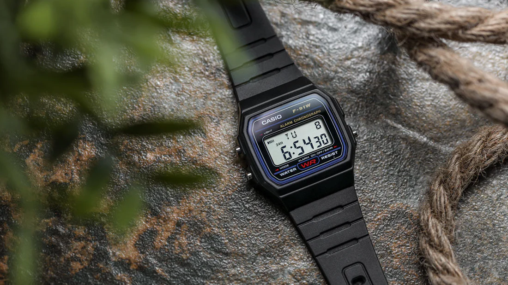

F-91W-1
Specifications
- Case size (L× W× H) 38.2 × 35.2 × 8.5 mm
- Weight
21 g
- Case and bezel material
Case / bezel material: Resin
Band
- Water Resistant
- Power supply and battery life
Approx. battery life: 7 years on CR2016
Watch Features
- 1/100-second stopwatch
- Measuring capacity: 59'59.99
- Measuring modes: Net time, split time, 1st-2nd place times
- Alarm/hourly time signal
Daily alarm
- LED light
- Auto-calendar (set at 28 days for February)
- Accuracy: ±30 seconds per month
- 12/24-hour format
- Regular timekeeping:
Hour, minute, second, pm, date, day